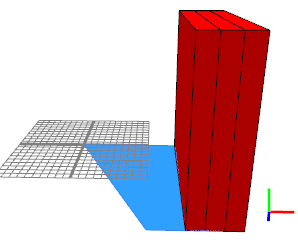

|
|
color operation
Synopsis
color(s)
color(r,g,b)
color(r,g,b,o)
Parameters
- s (string)
Color to set, in the format "#rrggbb" or "#rrggbboo" (hex). - r,g,b (float,float,float)
Color to set in red, green, blue components (range is 0.0 to 1.0). - r,g,b,o (float,float,float,float)
Color to set in red, green, blue, opacity components (range is 0.0 to 1.0).
The color operation sets the color of the current
shape's material. Input parameter values for r, g, b, or o that are outside the range [0,1] are clamped to [0,1].
Note: this command has the same effect as set(material.color.{r|g|b},
val), it is a
shortcut for convenience.
Related
Examples
Three ways to set a shape's color
|  |
Lot-->
extrude(20)
split(x) {
2 : color("#ff0000") X |
2 : color(1, 0, 0) X |
2 : set(material.color.r, 1.0)
set(material.color.g, 0)
set(material.color.b, 0) X
}
Three ways to set a shape's color. The results are identical. |
Copyright ©2008-2018 Esri R&D Center Zurich. All rights reserved.